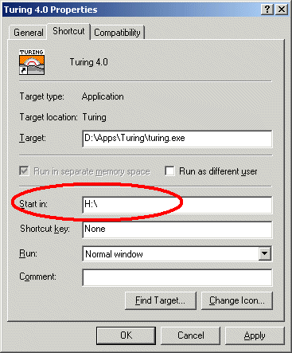
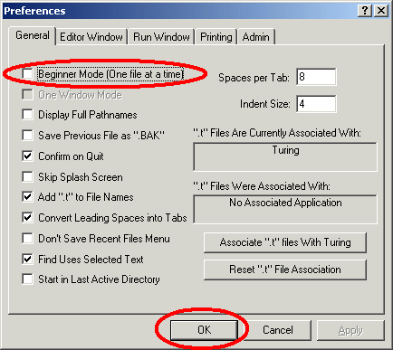

Turing Teacher/Administrator Quick Start Guide
This guide is designed to be the minimal information that you should read if
you are teaching courses using Turing 4.0 or are in charge of administering
Turing 4.0
This guide provides information on the Turing environment (the editor, the
run windows, etc.) It does not provide any information on the Turing
programming language itself.
Note, if you have any questions not answered here, please check with the
Turing Teacher/Administrator's Complete Guide
for more information.
Table of Contents
-
Making Certain You Have the Lastest Version
-
Mandatory Administration Issues
-
Using the Parallel Ports in Turing 4
-
Student Distribution
-
Technical Support
1. Making Certain You Have the Lastest Version
Turing 4.0 is updated regularly. To find out what version you
are currently running, click the About Turing menu item in the
Help menu. To find out the current version of Turing, go to
http://www.holtsoft.com/turing/support/#currentversion. This lists the
current version of the software.
This page also lists which bugs have been fixed and when new features have
been added. The page also contains a section
(
http://www.holtsoft.com/turing/support/#turing4patches)
where a file can be downloaded that will update most versions of Turing to
the latest version.
If you are a teacher or an administrator at a school and require a complete
installation file (as opposed to the publically available patch), contact Tom
West at (416) 978-8363.
2. Mandatory Administration Issues
Turing 4.0 has been designed to run on either a network or installed on
individual stand-alone machines. Running on a network is often preferred
because of ease of administration. However, Turing, like any other application
will load somewhat faster when it is launched if it is stored locally.
There are only two administration issues that must be addressed to configure
Turing properly.
-
Set the start-in (often called the "working") directory properly.
It is important that the start-in directory for Turing be
set to the student's home directory. This is done by setting the
start-in (or working) directory of the shortcut or
menu item used to launch Turing to the drive mapped to the student's
home directory.
The shortcut's working directory can be modified by
changing it's start-in or working directory property. (To display the
Properties dialog box, right click on the shortcut or menu item
and select Properties from the pop-up menu.)

Properties for a Shortcut under Windows 2000
This requires that you have write
access to the shortcut. Note that commercial menu front-ends have
their own way of setting the start-in directory of applications.
If there is no drive mapped to the student's home directory, or this
method is not applicable to your system setup, please check with the
Turing Teacher/Administrator's Complete Guide
for more information.
-
Set either Beginner or Regular Mode for Students.
Turing can be set to Beginner mode, in which case only one
file is open at a time. Opening up another file closes the first one.
When the program is running, the Editor window minimizes. In this way,
only one window is usually visible at a time. In this fashion,
Beginner mode is similar to the old DOS Turing.
In Regular mode, any number of files can be opened and each
appears in its own editor window.
In general, we suggest Beginner mode for grade 9 and 10 and
Regular mode for all others. If you are using Beginner
mode, we suggest that you point out to the students that they can use
the Prefences to change to Regular mode when they feel
comfortable with the environment.
To change the mode (or to make any other change to the system
preferences), you must open a DOS window, cd to the directory
in which the Turing executable (turing.exe) is located and
issue the command:
turing -admin
This will cause Turing to start in Administrator mode,
displaying the following dialog box:

Administration Mode Notification
Selecting Preferences from the File menu will display
a tabbed dialog box of all the Turing preferences.

Preferences in Administrator Mode
Set (or unset) the Beginner Mode preference, click the OK
button and quit Turing. Of course, you can change any other preferences
that you would like. Any changes that you make here will affect all
those using Turing.
3. Using the Parallel Ports in Turing 4
Turing 4.0 supports the parallelput and parallelget commands
to allow you to set the pins on the parallel port low and high. If you are
running under Windows NT, 2000 or XP, you will need to install a device
driver on each machine. Instructions for doing so can be found
here. If parallelput and
parallelget do not seem to function, you may need to change their
BIOS settings. You can get information on how to do that
here.
4. Student Distribution of Turing 4.0
The Ontario Ministry license does not include the right to redistribute the
software to students. If you wish to give the software to students, a
separate license must be obtained directly from Holt Software.
If your school does not have such a license, students can purchase the
software for home use by printing and then mailing an order form found
http://www.holtsoft.com/studentbuy.
This order form can also be used to allow interested students to purchase
textbooks.
If your school has purchased a redistribution license (almost 200 schools have
done so), then you may redistribute the Turing software to your students.
You can either burn copies of the CD to distribute to students or place the
Turing installer file onto your school Internet server and give your students
the URL.
If you place this file on your school internet server, you must not make
any links from your web pages to the software.
This will prevent other users of the web from downloading your software. If
you place links from your school's web site, then at some point a web search
engine will find the software and post its location to the internet at large,
allowing for large scale piracy (and a very overloaded school web server).
If there are no links to the software, then only those who have been told
the exact URL will be able to download the software.
Note that if you are copying a number of different programs onto a single
CD for redistribution, you may rename the Turing installer program to
something more descriptive.
Permanent student redistribution licenses can be purchased for $500-$750
for most schools. If you are interested in purchasing a student
redistribution license, contact Chris Stephenson at (416) 978-6476 or
chris@hsa.on.ca
5. Technical Support
If you have problems, questions or suggestions about the Turing software,
contact technical support at:
| Telephone: |
|
(416) 978-8363
|
| Toll free: |
|
1-800-361-8324
|
| Fax: |
|
(416) 978-1509
|
| E-mail: |
|
west@hsa.on.ca
|